Configurar el variador de frecuencia ABB para que:
| Parámetro ABB | Valor Configurado | Descripción |
|---|---|---|
| Start/Stop Source | DI1 (bornero) | Arranque por contacto seco |
| Frequency Reference | AI1 (0–10 V) | Referencia de frecuencia analógica |
| AI1 Minimum | 0.0 V | Corresponde a 0 Hz |
| AI1 Maximum | 10.0 V | Corresponde a 50 Hz (fmax) |
| Min Frequency | 0 Hz | Frecuencia mínima de salida |
| Max Frequency | 50 Hz | Frecuencia máxima de salida |
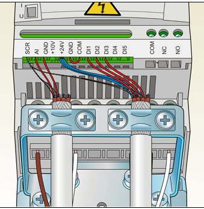
Captura del panel del VFD ABB mostrando los parámetros de configuración.
Se realizan dos tipos de conexión entre el PLC y el VFD ABB:
| Canal | Tipo | Rango | Registro PLC | Destino VFD |
|---|---|---|---|---|
| VO1 (Ch4) | Salida Analógica | 0 – 10 V DC | D40 (valor 0–4000) | AI1 (referencia frecuencia) |
| Y20 | Salida Discreta | Relé / Transistor | Y20 | DI1 (start/stop) |
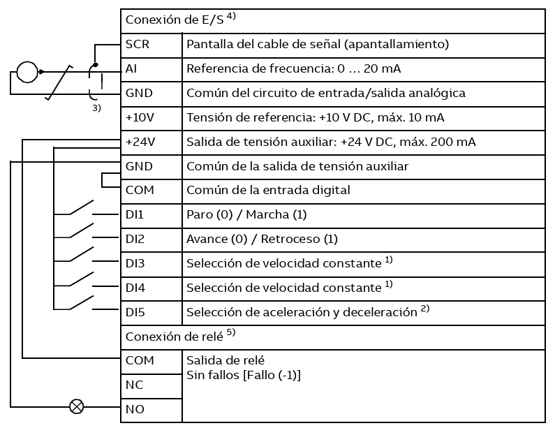
Conexión Y20 → DI1 (señal discreta de arranque/paro).
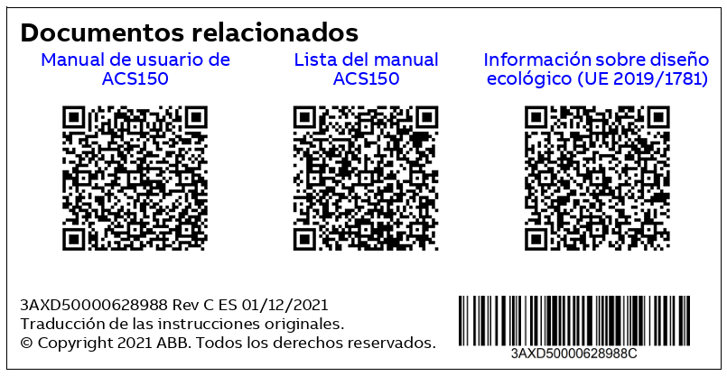
Conexión DVP06XA VO1 → AI1 (señal analógica 0–10 V de frecuencia).
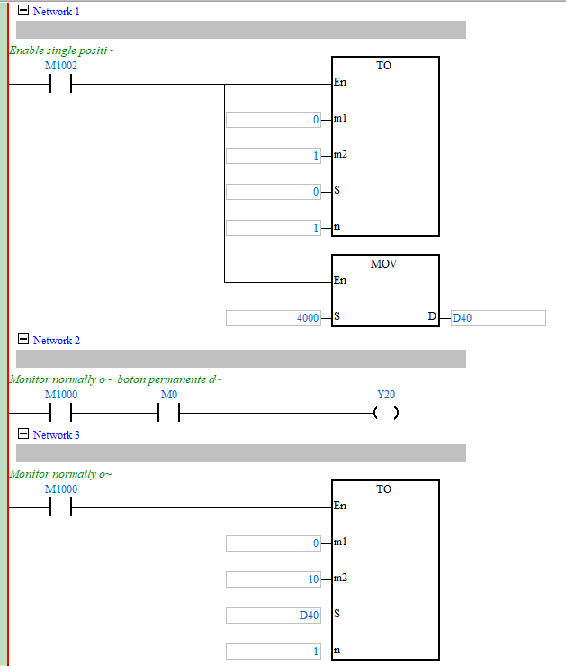
Programa Ladder en ISPSoft — control Y20 y escritura del módulo 06XA con D40.
| Valor D40 | Voltaje Salida | Frecuencia VFD | RPM Esperadas* |
|---|---|---|---|
| 0 | 0 V | 0 Hz | 0 RPM |
| 1000 | 2.5 V | 12.5 Hz | 375 RPM |
| 2000 | 5 V | 25 Hz | 750 RPM |
| 3000 | 7.5 V | 37.5 Hz | 1125 RPM |
| 4000 | 10 V | 50 Hz | 1500 RPM |
* Motor de 4 polos, deslizamiento despreciado para cálculo teórico.
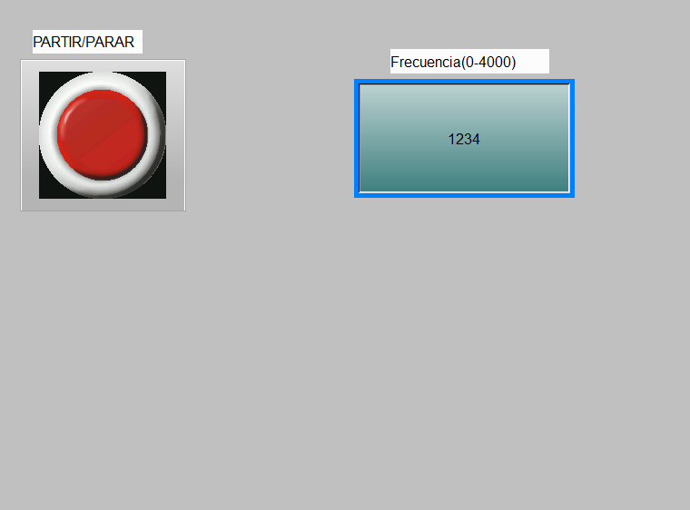
Pantalla HMI minimalista — control de setpoint D40, arranque/paro M0.
Se utiliza la función SPD (Speed Detection) para contar pulsos del encoder y calcular la velocidad de rotación.
El tiempo de muestreo de SPD afecta directamente la resolución y velocidad de actualización de la lectura de RPM:
| Base T (ms) | Resolución (RPM) | Actualización | Uso Recomendado |
|---|---|---|---|
| 1000 | 0.015 RPM | Cada 1 s | Baja velocidad, alta precisión |
| 700 | 0.021 RPM | Cada 0.7 s | Compromiso general |
| 300 | 0.049 RPM | Cada 0.3 s | Lazo cerrado PID |
| 200 | 0.073 RPM | Cada 0.2 s | Respuesta rápida PID |
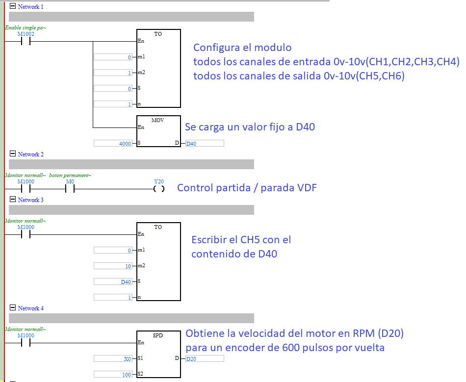
Programa Ladder — SPD con base de tiempo ajustable y escalado a RPM.
Se agrega a la pantalla HMI un display numérico que muestre en tiempo real el valor de las RPM calculadas a partir del encoder.
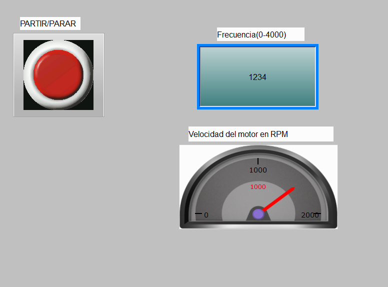
Pantalla HMI con display de velocidad en RPM incorporado.
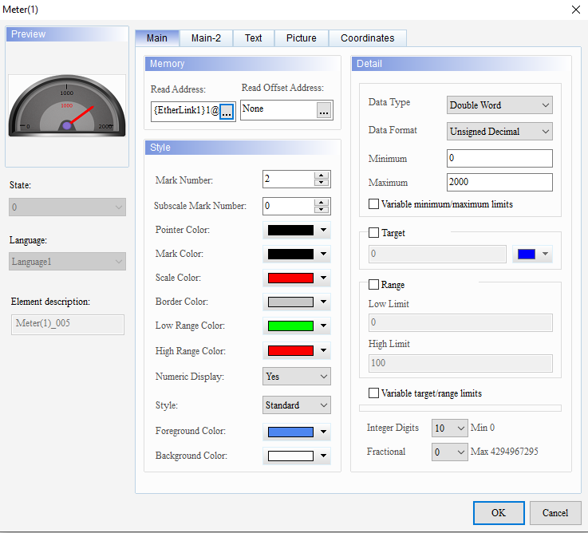
Configuración del elemento de visualización de RPM en el software HMI.
Se debe consultar el manual de programación Delta DVP-SE, específicamente la sección de la instrucción PID, para comprender:
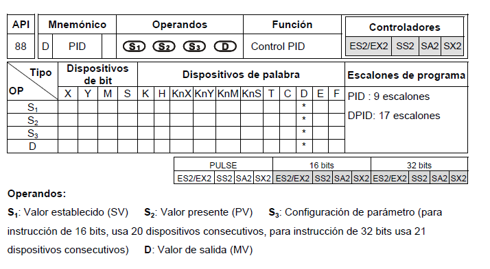
Captura del manual Delta DVP-SE — sección de la función PID.
| Señal | Registro PID | Fuente/Destino | Unidad |
|---|---|---|---|
| Setpoint (SV) | D810 | HMI (entrada numérica) → D810 | RPM |
| PV (Medida) | D820 | SPD escalado → D820 | RPM |
| MV (Salida) | D830 | D830 → D40 (módulo 06XA) | 0–4000 |
| Ganancia Kp | D800 | Configurable | % |
| Tiempo integral Ti | D801 | Configurable | ms |
| Tiempo derivativo Td | D802 | Configurable | ms |
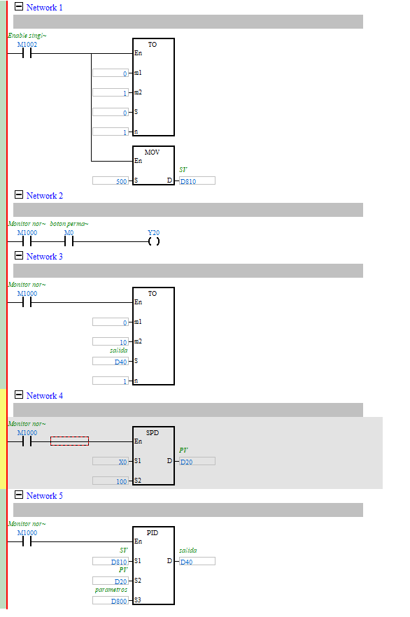
Programa Ladder — PID con lazo cerrado: PV = RPM encoder, MV = D40 (señal al VFD).
| Efecto de Kp | Kp Bajo | Kp Medio | Kp Alto |
|---|---|---|---|
| Tiempo de respuesta | Lento | Moderado | Rápido |
| Error en estado estacionario | Grande | Mediano | Pequeño |
| Sobreoscilación | Ninguna | Baja | Alta |
| Estabilidad | Estable | Estable | Puede oscilar |
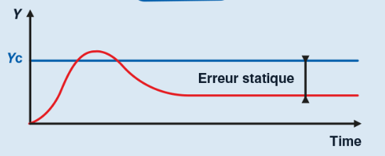
Respuesta del sistema con control proporcional puro (Kp solo, Ki=0, Kd=0).
Velocidad: 1005 RPM
Tiempo: t67 = ________ ms
Velocidad: 345 RPM
Tiempo: t23 = ________ ms
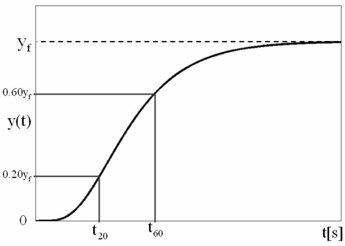
Gráfica de respuesta con marcadores al 23 % y 67 % de la velocidad nominal.
El método de los dos puntos de Smith (1958) permite estimar los parámetros de un modelo FOPDT (First Order Plus Dead Time) a partir de dos puntos de la respuesta escalón del proceso:
Utilizando los puntos al 28.4 % y 63.2 % de la respuesta (o 23 % y 67 % como aproximación):
| Parámetro | Fórmula | Valor |
|---|---|---|
| t67% | Medido | ________ ms |
| t23% | Medido | ________ ms |
| τ | 1.5 · (t67% − t23%) | ________ ms |
| L | t67% − τ | ________ ms |
| K (ganancia proceso) | ΔY/ΔU | ________ |
| Kc | (1/K) · (τ/L + 1/3) | ________ |
| Ti | τ + L/3 | ________ ms |
| Td | (τ·L)/(2τ + L/3) | ________ ms |
| Sección | Contenido | Incluir |
|---|---|---|
| Conexiones | Diagramas de cableado | PLC→VFD, Encoder→PLC, 06XA→VFD |
| VFD ABB | Tabla de parámetros configurados | Start source, Frequency ref, rangos |
| Encoder | PPR, modo de conteo, base SPD | 1024 PPR, ×4, 200 ms |
| HMI | Capturas de pantalla | Setpoint, botones, display RPM |
| PID | Ganancias calculadas | Kp, Ti, Td (método Delta + Smith) |
| Respuesta | Gráficas velocidad vs tiempo | P solo vs PID Smith |
| Smith | Cálculo de τ y L | t23%, t67%, τ, L, Kc, Ti, Td |